Сведения об устройстве фракции, внутренней иерархии, возможностях демонов и обязательствах перед Прародителем.
01 / Главная информация
Природа демонов
Демоны — в основном плотоядный, вампирический вид, основной пищей которых являются люди. По природе своей демон — ночной хищник: солнце для него гибельно, тьма — охотничье угодье, а человеческая плоть — единственная пища, что утоляет его голод. Демоны сильнее людей и обладают регенерацией. Все демоны были созданы благодаря крови Прародителя демонов.
Иерархия фракции
От высшего положения к низшему
Прародитель демонов
Высшие Луны
Низшие Луны
4-й Круг Крови / Владельцы отрядов
3-й Круг Крови
Командиры отрядов / Старший инструктор / Демон высшей магии крови
2-й Круг Крови / 1-й Круг Крови / Инструктор
Демон магии крови
Демон средней крови
Демон малой крови
Примечание: если два демона находятся на одном уровне иерархии, но имеют разные ранги, демон с более высоким рангом вправе отдавать приказы демону с более низким рангом. Пример: Демон магии крови с рангом Шико может отдавать приказы Демону магии крови с рангом Тсукомон.
Магия крови
Магия крови — это уникальные боевые техники, которые используют демоны, съевшие достаточное количество людей.
Двенадцать Лун
Подробнее на отдельной вкладке
Сильнейшие демоны под командованием Мудзана Кибуцуджи. Полный состав Высших и Низших Лун с изображениями находится на вкладке «Двенадцать Лун».
Рекомендации
Дополнительные возможности при продвижении
1-й уровень
Послабление требований
Позволяет пропустить один критерий при повышении ранга или снизить условия для отработки выговора.
2-й уровень
Ускоренное повышение
Снижает КД на повышение на один день или позволяет пропустить два критерия повышения.
3-й уровень
Особая рекомендация
Позволяет мгновенно перейти на следующий ранг или снять выговор.
Получение рекомендаций
Рекомендации 1-го и 2-го уровня
Могут выдаваться за участие в тренировках, заданиях от Двенадцати Лун и мероприятиях. Выдать их могут инструкторы, Демоны Двенадцати Лун и Прародитель.
Рекомендации 3-го уровня
Выдаются за участие в мероприятиях, проявление себя во фракции или участие в глобальном ивенте. Выдать такую рекомендацию может только Прародитель.
Цели существования демонов
Долг перед Прародителем
Поиск голубой паучьей лилии
Одна из главных целей, возложенных на демонов.
Долг перед Прародителем
Истребление семейства Убуяшики
Демоны обязаны содействовать выполнению этой цели.
02 / Особый состав
Двенадцать Лун
Демоны Двенадцати Лун — группа сильнейших демонов под командованием Мудзана Кибуцуджи. Они получили от Прародителя часть демонической крови, усиливающей их способности. У низших Лун число находится в одном глазу, у высших на втором глазу присутствует надпись «Высшая». Нумерация идёт от сильнейшей первой Луны до шестой.
Высшие Луны
Сильнейшие представители
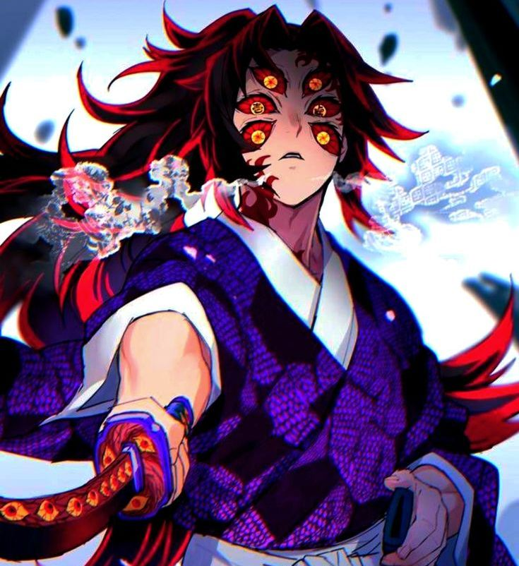
1-я Высшая Луна
Кокушибо
Высшая Луна I
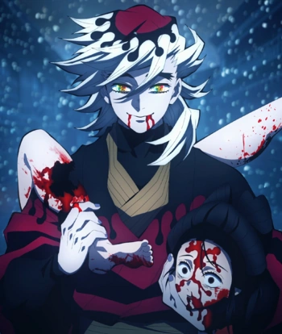
2-я Высшая Луна
Доума
Высшая Луна II
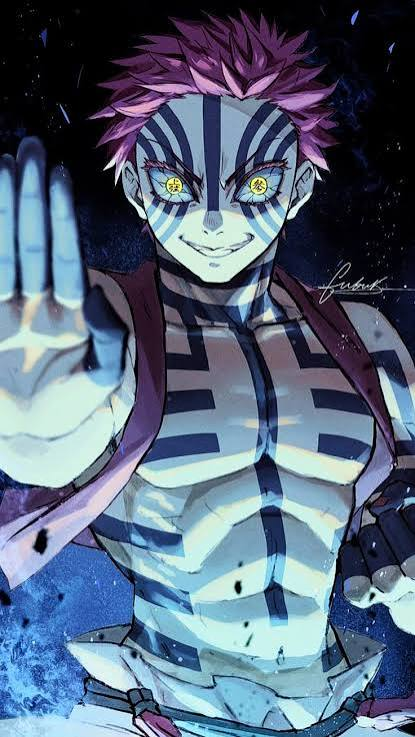
3-я Высшая Луна
Аказа
Высшая Луна III
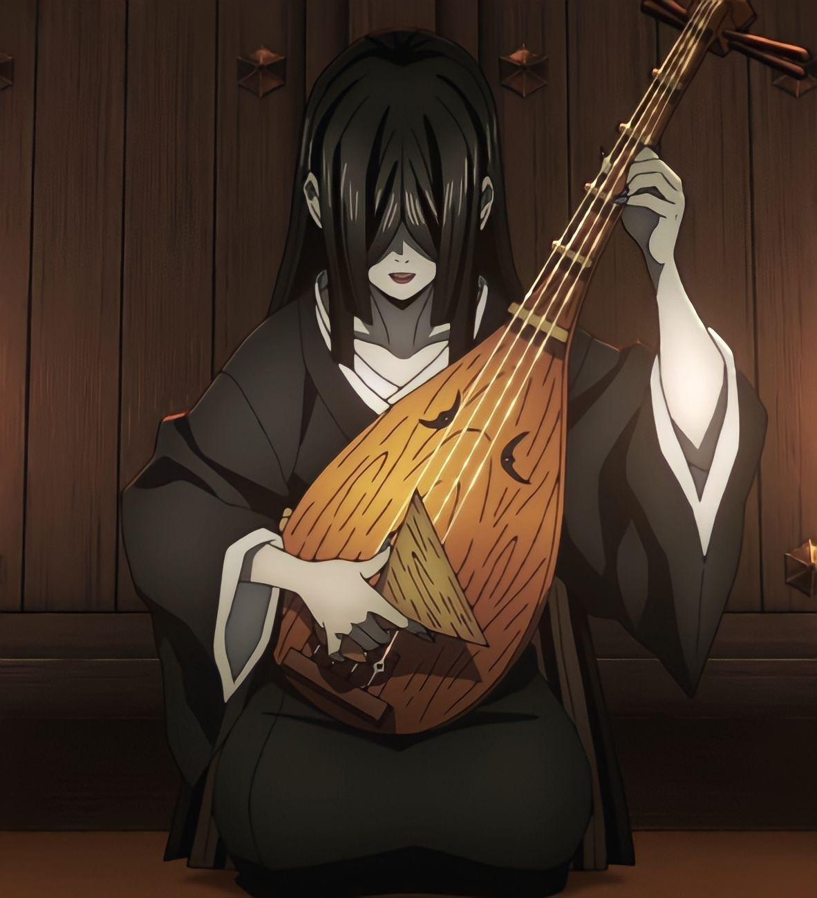
4-я Высшая Луна
Накиме
Высшая Луна IV
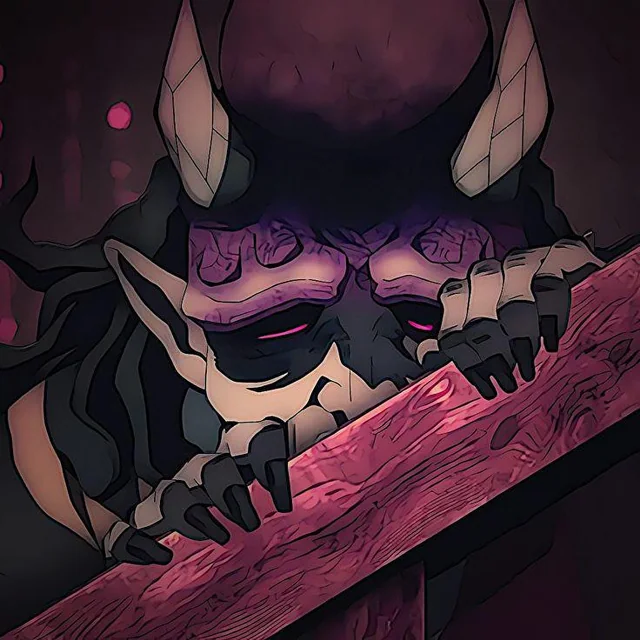
4-я Высшая Луна
Хантенгу
Высшая Луна IV
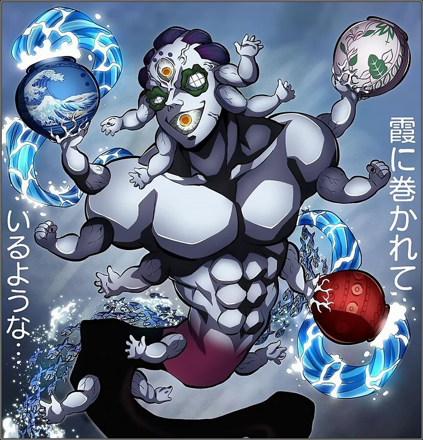
5-я Высшая Луна
Гёкко
Высшая Луна V
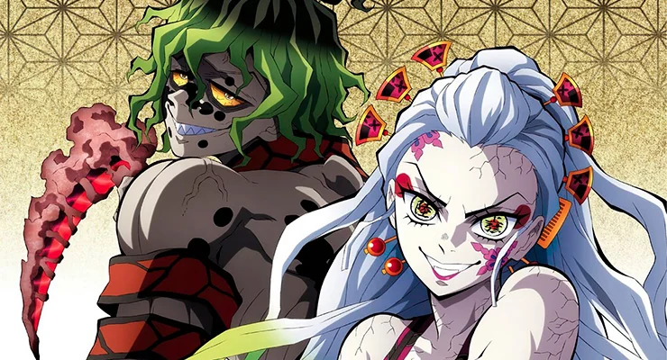
6-я Высшая Луна
Даки и Гютаро
Высшая Луна VI
6-я Высшая Луна
Кайгаку
Высшая Луна VI
Низшие Луны
Нижний круг Двенадцати Лун
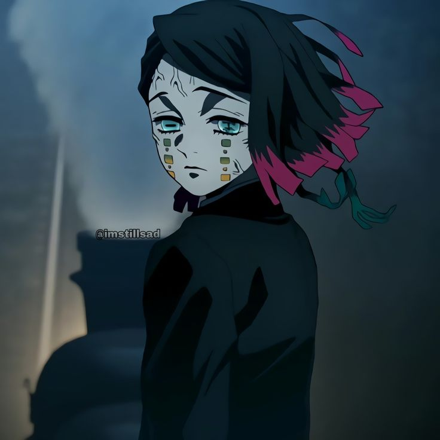
1-я Низшая Луна
Энму
Низшая Луна I
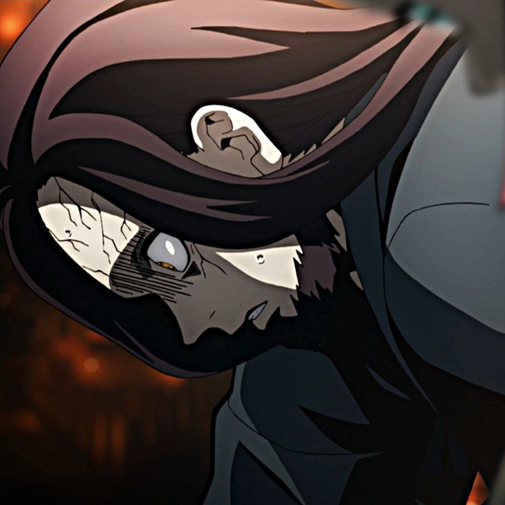
2-я Низшая Луна
Рокуро
Низшая Луна II
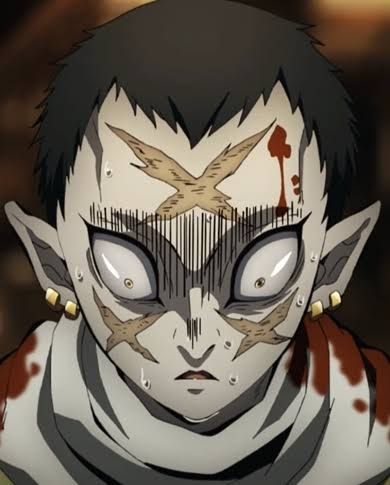
3-я Низшая Луна
Вакураба
Низшая Луна III
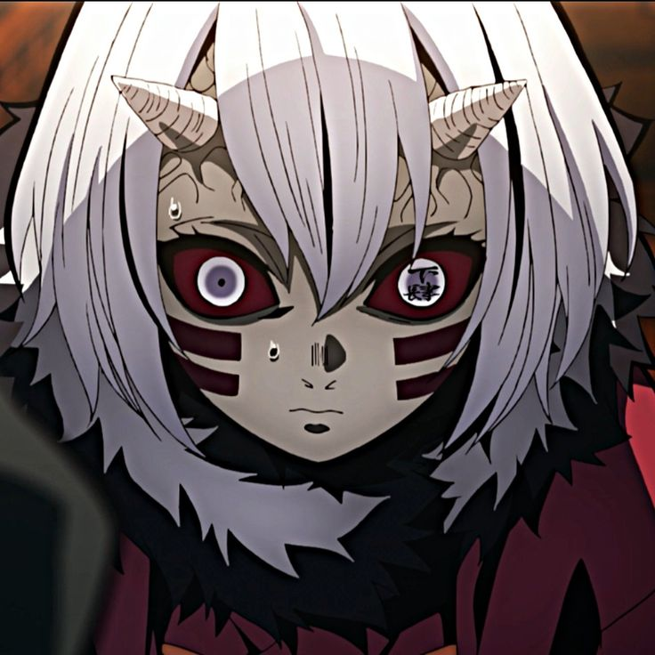
4-я Низшая Луна
Мукаго
Низшая Луна IV
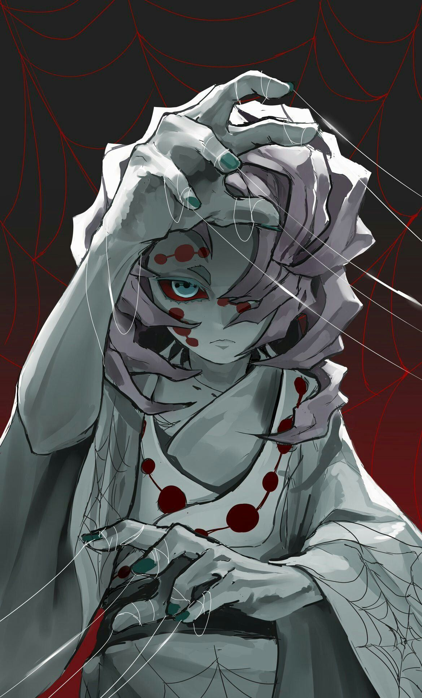
5-я Низшая Луна
Руи
Низшая Луна V
6-я Низшая Луна
Камануэ
Низшая Луна VI
03 / Полномочия
Привилегии должностей
Полномочия определяют границы командования, организации мероприятий и ответственности внутри фракции.
Прародитель демонов
Осуществляет полное командование над фракцией демонов.
Высшие Луны
Дозволено
Осуществлять полное командование над нижестоящими демонами.
Организовывать сборы и мероприятия: тренировки, вылазки и другие активности.
Пресекать нарушения демонических законов.
Свободно посещать запретные территории. Исключение — зал Мудзана.
Полностью командовать кланом, если Луна является его смотрящей.
Обучать низших демонов и обращать скитальцев.
Запрещено
Неподчинение установленной иерархии.
Нарушение клятв крови.
Вредительство фракции.
Выдача прав, рангов и привилегий без одобрения Прародителя (блат).
Невыполнение прямых обязанностей.
Уточнение: во время мероприятий и выполнения задач клана Луна имеет приоритет в командовании его составом. Например, если Первая Высшая Луна организует тренировку во время служения Ямигири, Доума имеет приоритет при руководстве демонами культа. Злоупотребление этим правом карается снятием привилегий.
Низшие Луны
Дозволено
Осуществлять полное командование над нижестоящими демонами.
Организовывать сборы нижестоящих демонов: тренировки, вылазки и другие мероприятия.
Пресекать нарушения клятв крови.
Свободно посещать запретные территории, кроме зала Мудзана, зала Высших Лун и горы Натагумо.
Осуществлять вторичное командование кланом, если Луна является его смотрящей.
Обучать низших демонов и обращать скитальцев.
Запрещено
Неподчинение установленной иерархии.
Нарушение клятв крови.
Вредительство фракции.
Выдача прав, рангов и привилегий без одобрения Прародителя.
Невыполнение прямых обязанностей.
Уточнение: все изменения и деятельность, организуемые низшей Луной для клана, должны быть одобрены высшей Луной. Во время мероприятий своего клана низшая Луна имеет приоритет перед другими низшими Лунами.
3-й и 4-й Круги Крови
Дозволено
Командовать нижестоящими демонами.
Организовывать сборы и мероприятия.
Пресекать нарушения клятв крови.
Обучать низших демонов и обращать скитальцев.
Запрещено
Неподчинение установленной иерархии.
Нарушение клятв крови.
Вредительство фракции.
Самовольная выдача прав, рангов и привилегий.
Невыполнение прямых обязанностей.
Старший инструктор
Дозволено
Командовать нижестоящими демонами.
Организовывать сборы и мероприятия.
Пресекать нарушения клятв крови.
Обучать низших демонов и обращать скитальцев.
Получать ранг Шико, находясь на данной должности, запрещено.
Запрещено
Неподчинение установленной иерархии.
Нарушение клятв крови.
Вредительство фракции.
Самовольная выдача прав, рангов и привилегий.
Невыполнение прямых обязанностей.
Инструктор
Дозволено
Командовать нижестоящими демонами.
Организовывать сборы и мероприятия.
Пресекать нарушения клятв крови.
Обучать низших демонов и обращать скитальцев.
Запрещено
Неподчинение установленной иерархии.
Нарушение клятв крови.
Вредительство фракции.
Самовольная выдача прав, рангов и привилегий.
Невыполнение прямых обязанностей.
05 / Регламент
Клятва крови
Обязательные правила поведения, подчинения и взаимодействия между членами демонической фракции.
1. Подчинение и уважение
Каждый демон, независимо от занимаемого поста, обязан подчиняться приказам вышестоящих по иерархии и проявлять уважение. При виде демона Двенадцати Лун необходимо преклонить колено и поприветствовать его (например: «Здравствуйте, господин Кокушибо»). Это правило действует только в Крепости Бесконечности.
1.1. Обращение к Прародителю
Только тройка Высших Лун имеет право называть Прародителя «Господином». Остальные демоны обязаны обращаться к нему «Господин Прародитель».
2. Дуэли и использование магии крови
Сражаться между собой разрешено только в додзё. За нарушение вне додзё предусмотрено строгое наказание. Использовать магию крови вне додзё могут только Демоны Двенадцати Лун.
Исключение: магию крови разрешено использовать для перемещения по цитадели.
2.1. Доступ в помещения
Запрещено посещать отрядные комнаты, в которых ведётся деятельность отряда или находятся его участники. Также запрещено находиться в залах Высших и Низших Лун и комнате Прародителя без разрешения владельцев помещений, тройки Высших Лун или Прародителя.
2.2. Правила территорий
У каждого здания и помещения цитадели есть собственные правила и минимальные требования для допуска. Например, в зал Высших Лун могут входить только Луны, Прародитель и демоны, получившие одобрение. Исключения: разрешение находящихся в помещении, разрешение Двенадцати Лун или Прародителя.
3. Некорректные приказы
Полномочия по отдаче приказов зависят от ранга и положения в иерархии. Вышестоящие демоны могут отдавать среднему и низшему составу только уместные приказы. Инструкторы имеют полномочия отдавать приказы во время тренировок; в остальное время их приказы также ограничены.
Запрещены заведомо некорректные приказы вроде «Убей Четвёртую Высшую Луну» или «Спрыгни в бездну».
3.1. Запрет командования вышестоящими
Запрещено отдавать приказы тем, кто находится выше вас по иерархии. Корректная формулировка инструктора: «Демоны, которые ниже меня в иерархии, собраться в строй в цитадели».
4. Приоритет приказов Лун
Луны обладают повышенным приоритетом приказов. Если Луна проводит особое задание или мероприятие, она может прервать повседневную деятельность демонов, например тренировки или лекции. Корректные приказы Двенадцати Лун обязательны к исполнению. Даже команда «Встань в строй» считается приказом. Если вас вызывают на тренировку, вы обязаны прийти.
4.1. Приоритет тройки Высших Лун и Прародителя
Тройка Высших Лун и Прародитель имеют высший приоритет. Запрещено отправлять им вызовы на битву крови (исключение система повышения кругов крови). Дуэль без согласия недействительна. Их приказы может оспорить только демон, стоящий выше в иерархии. При противоречии приказов необходимо выполнить приказ более высокопоставленного лица.
5. Нападение на демона
Разногласия между демонами решаются дуэлью крови. Нападение на другого демона, даже при наличии весомой причины, считается нарушением. Случайное столкновение может быть смягчено до предупреждения. Исключение: Двенадцать Лун и Прародитель.
6. Обязанности обучающего
Инструктор или другой обучающий обязан помочь низшему демону выполнить критерии для получения ранга Demon, объяснить основы фракции и ответить на вопросы. Если он не может помочь, то обязан передать демона другому ответственному лицу.
7. Приказы Прародителя
Приказы Прародителя являются неоспоримыми.
8. Запрет намеренного исключения
Запрещён намеренный слив члена фракции из отряда или фракции.
9. Чёрная агитация
Запрещено негативно высказываться о других отрядах с целью их высмеивания или переманивания участников.
10. Поведение в крепости
Запрещено неадекватное поведение на территории Крепости Бесконечности.
Наказание: за нарушение любого пункта может быть выдан выговор или назначено особое наказание в зависимости от тяжести нарушения. За одну ситуацию можно получить максимум один выговор.
Личные комнаты
Свободные комнаты в Крепости Бесконечности выдаются Прародителем за определённые достижения.
Правила тренировок
1. Время между тренировками
КД на тренировки — 15 минут. За его соблюдением следят главный инструктор и Луны. Исключение: Двенадцать Лун и Прародитель. Злоупотребление этим правом может повлечь наказание.
2. Польза тренировки
Тренировка должна помогать демонам становиться сильнее: например, механическая тренировка для освоения магии крови или РП-тренировка.
3. Подчинение проводящему
Участники обязаны слушать проводящего тренировку, кроме случаев некорректных приказов или нарушения иерархии.
4. Пропуск сбора
Пропуск сбора без уважительной причины после личного обращения к демону равен предупреждению. Повторный пропуск после предупреждения карается выговором.
Правила поведения в строю
1. Запрещено покидать строй без разрешения. Исключение — приказ Высшей луны или Прародителя.
2. Запрещено разговаривать во время строя без разрешения.
3. Запрещено мешать проведению сборов.
Правила Храма Доумы
1. Демонам запрещено противоречить Ямигири, находящимся в храме или на его территории, независимо от ранга. Исключение — Высшие Луны и Прародитель.
2. В храме недопустимо грубое поведение. Находиться на территории храма необходимо в маскировке. Исключение — тройка Высших Лун и Прародитель.
3. Запрещено создавать беспорядок в храме и на его территории.
4. За нарушение правил члены отряда Ямигири имеют право выгнать нарушителя со своей территории. Исключение — тройка Высших Лун и Прародитель.
Правила горы Натагумо
1. Членам Семьи и обычным демонам-гостям запрещено перечить Младшему Брату. Посетители обязаны подчиняться любому члену Семьи. Исключение — Прародитель и тройка Высших Лун.
2. Запрещено взаимодействовать с ловушками Семьи, ломать их или обезвреживать.
3. Если любой член Семьи потребовал покинуть гору Натагумо, посетитель обязан уйти в течение 10 секунд. Высшие Луны могут быть изгнаны по веской причине, низшие Луны обязаны подчиниться. Исключение — Семья Пауков, Прародитель и тройка Высших Лун.
4. Запрещено прыгать по крышам домов по пути на гору и на самой горе. Исключение — Семья Пауков, Прародитель и тройка Высших Лун.
5. На горе Натагумо главной является Семья Пауков. Никто, кроме Господина, не вправе приказывать членам Семьи на их территории. Исключение — Прародитель и тройка Высших Лун.
6. Перед посещением горы Натагумо необходимо предупредить об этом через телепатию. В противном случае любой член Семьи Пауков вправе прогнать посетителя. Исключение — Прародитель и Высшие Луны.
07 / Развитие персонажа
Система повышения
Повышение демона проходит последовательно, по цепочке рангов. Для перехода на следующий ранг необходимо выполнить все установленные требования.
Основное правило КД: таймер повышения считается персонально — с момента последнего повышения конкретного демона. Для защиты от злоупотреблений новое повышение доступно только после полного личного КД и дополнительных 10 минут проверочного буфера.
Пример: если демон повысился в 22:00 09.03, следующее повышение возможно не раньше 22:10 10.03.
КД сохраняется по рангам.
Otokuma - Demon
КД: 1 день
Пройти проверку на знание клятв крови.
Поучаствовать в убийстве двух истребителей.
Demon - Keykon
КД: 1 день
Захватить 5 точек с инструкторами или Лунами.
Поучаствовать в убийстве 6 истребителей.
Принять участие в тренировке от инструктора или Луны.
Keykon - Hofuma
КД: 2 дня · Получение профессии: Демон малой крови
Принять участие в двух тренировках от Демона Двенадцати Лун.
Срубить головы 10 истребителям.
Выполнить поручение инструктора или Луны.
Побороть жажду крови: 20 РП-действий.
Hofuma - Chisuma
КД: 2 дня
Срубить головы 15 истребителям.
Принять участие в захвате 10 точек.
Выполнить одно поручение от Низшей Луны.
Получить одобрение инструктора или Луны.
Chisuma - Chikuma
КД: 2 дня
Срубить головы 17 истребителям.
Устроить диверсию в любом месте — совместно или в одиночку.
Поучаствовать в двух тренировках от инструктора или Демона Двенадцати Лун.
Выполнить поручение любой Низшей Луны.
Chikuma - Asakuma
КД: 2 дня · Получение профессии: Демон средней крови
Выполнить два поручения от Демона Двенадцати Лун.
Срубить головы 20 истребителям.
Принять участие в захвате 10 точек.
Asakuma - Hobura
КД: 3 дня
Получить разрешение на переход от одной из Низших Лун.
Срубить головы 30 истребителям.
Победить любого демона в дуэли крови.
Hobura - Shateigashira
КД: 3 дня
Убить 20 истребителей.
Занять любое призовое место в еженедельном турнире.
Выполнить задание Демона Двенадцати Лун.
Shateigashira - Wakagashira
КД: 3 дня · Получение профессии: Демон магии крови
Победить 5 демонов в додзё.
Убить 20 истребителей.
Получить 1-е или 2-е место в еженедельном турнире.
Wakagashira - Tsukomon
КД: 3 дня
Получить одобрение на повышение от Кокушибо.
Поучаствовать в тренировках от 5 разных Высших Лун.
Занять 1-е место в еженедельном турнире.
Tsukomon - Shiko
КД: 3 дня
Убить 5 разных Столпов.
Выполнить личное задание от Прародителя демонов.
Придумать новую технику магии крови и отыграть её 20 РП-действиями.
Получить одобрение Прародителя демонов.
Для подтверждения выполненных критериев используйте установленный на сервере порядок отчётности и доказательств. Сами по себе карточки сайта не фиксируют прогресс персонажа.
09 / Испытание силы
Битва крови
Битва крови — установленный способ разрешения разногласий и определения превосходства между демонами. Все условия должны быть согласованы и равнозначны для участников.
Основные правила
Условия вызова
Допустимая разница в силе
Участники должны быть равны по силе либо один демон может быть максимум на два ранга выше другого.
Право вызова
Доступность
Вызвать на битву крови можно с любого ранга. Запрещено вызывать Высших и Низших Лун, если такая возможность не предусмотрена пунктами повышения или правилами Кругов.
Отказы
Два отказа
У каждого участника есть два отказа. После их исчерпания вызов необходимо принять, иначе засчитывается техническое поражение. После дуэли количество отказов сбрасывается до нуля.
Ограничения
Запрет усилений
Запрещено использовать дополнительные усиления: молитвы, зелья и кровь.
КД на битву крови — 2 дня. Условия победы для обоих участников должны быть равноценными.
Порядок проведения дуэли
01. Вызов
Уверенный в своей силе демон отправляет вызов другому участнику в канале «Вызов на битву крови».
02. Ответ на вызов
Необходимо дождаться, пока соперник примет вызов или откажется от него. Решение должно быть принято в течение двух суток.
03. Согласование
Если вызов принят, ответственные за проведение дуэлей согласовывают дату и время с участниками. После этого публикуют объявление о дуэли в канале «Объявления дуэлей», указывая условия победы и поражения.
04. Сбор участников
В назначенное время ответственное лицо или его ученик вызывает обоих претендентов в Крепость Бесконечности, а также желающих посмотреть на дуэль, и сопровождает их к месту проведения.
05. Проведение боя
Ответственное лицо объявляет начало боя. Дуэль состоит из пяти раундов. Для победы необходимо выиграть три из пяти раундов.
06. Завершение
После победы одного из участников объявляется окончание дуэли. Оба демона должны склониться перед ответственным за дуэль и ожидать дальнейших указаний.
07. Клятва проигравшего
Проигравший приносит клятву крови об обязательном исполнении условий дуэли в присутствии остальных демонов.
08. Нарушение условий
За нарушение принесённой клятвы выносится выговор. После этого дуэль считается завершённой.
09. Публикация результата
Итоги дуэли публикуются в канале «Итоги боёв».
Награды за победу
Подчинение
Подчинение другого демона на срок до двух недель.
Критерий повышения
Возможность засчитать выполнение одного критерия для повышения.
Понижение ранга
Возможность вызвать на битву крови с условием понижения ранга на один уровень. Участники должны быть равны по рангу или иметь разницу не более двух рангов.
Дополнительные условия
Могут быть установлены другие награды и условия в рамках действующих правил фракции и после согласования с ответственными лицами.
04 / Структура фракции
Отряды
Отряды объединяют демонов по направлениям деятельности. Выберите отряд, чтобы узнать его задачи, иерархию и преимущества.
Под руководством Даки и Гютаро
Инструкторы
Учебная и контролирующая часть фракции: вербовка, обучение, тренировки и контроль дисциплины.
Под руководством Руи
Семья пауков
Ролевой отряд, отыгрывающий семью на горе Натагумо: ловушки, ужины и рейды.
Ученики Аказы
Раншики
Личный отряд Третьей Высшей Луны. Боевой стиль Сорью, система поясов и дуэли.
Под началом Кокушибо
Полумесяцы
Элитный отряд воинов лунных техник с собственной системой фаз Луны.
Под началом Доумы
Культ вечного рая
Религиозный отряд с чёткой иерархией, который действует под обликом культа.
Владыка песков
Песок
Демоны с песчаной кровью. Выслеживание и ликвидация истребителей.
Правила отдельных отрядов дополняют клятвы крови. Отрядные выговоры выдаются за нарушение правил отряда, невыполнение квот или обязанностей. Подробнее на вкладке «Устои крови».
Отряд
Инструкторы
Отряд Инструкторов — это учебная и контролирующая часть фракции демонов. Находится под прямым руководством глав фракции: Даки и Гютаро.
Основные задачи
Вербовка людей во фракцию.
Обучение новоприбывших демонов.
Проведение тренировок и мероприятий.
Контроль дисциплины и субординации как внутри фракции, так и внутри своего отряда.
Развитие навыков и знаний уже опытных демонов.
Сохранение, поддержание и расширение базы знаний демонов.
Плюсы отряда
Возможность обучать других и влиять на развитие фракции.
Участие в вербовке: можно приводить новых людей.
Статус: инструкторы занимают заметное место в иерархии.
Доступ к базе знаний и возможность её расширять.
Роль учителя и наставника подходит тем, кто любит обучать, следить за порядком и развивать навыки.
Связь с главами фракции (Даки и Гютаро): отряд находится под их прямым руководством.
Отряд
Семья пауков
Семья пауков — это ролевой отряд демонов, сформированный под руководством Пятой Низшей Луны (Руи). Глава семьи — Руи, заместитель — Отец-паук.
Основная задача
Отыгрывать роли настоящей семьи: отец, мать, сестра (старшая или младшая), брат. Семья живёт на горе Натагумо и ведёт себя как единая семья пауков.
Направления деятельности
Защита территории. Установка ловушек (натяжные нити, ямы, нажимные ловушки из паутины) для охраны дома и добычи еды.
Мероприятия:
Званый ужин: приглашаются гости, демоны или другие отряды.
Локальный ужин: внутренняя семейная посиделка.
Рейд горы Натагумо: защита от истребителей с упором на сильный РП.
Семейные обязанности:
Мать готовит и накрывает на стол.
Сёстры помогают матери и убирают на горе.
Плюсы отряда
Сильный семейный и атмосферный отыгрыш: можно глубоко прочувствовать роли отца, матери, братьев и сестёр.
Чёткая иерархия и система развития: есть понятные ранги и условия повышения.
Активная защита территории и работа с ловушками: много интерактива.
Регулярные мероприятия (ужины и рейды), дающие хороший РП.
Узкая, но очень характерная тематика (пауки и семья Руи): легко погрузиться в атмосферу арки горы Натагумо.
Есть место как для домашних ролей (готовка, уборка, забота), так и для боевых (ловушки, защита).
Уникальная магия крови.
Отряд
Раншики
Раншики — личный отряд и ученики Третьей Высшей Луны Аказы. В основе отряда лежит изучение и совершенствование боевого стиля Сорью (стиль Аказы). Отряд ориентирован на жёсткий боевой и тренировочный отыгрыш: главный акцент — сила, поединки, развитие и верность Аказе.
Основные обязанности
Постоянно наращивать свою силу.
Сражаться с сильными противниками.
Идти по пути своего наставника (Аказы).
Оказывать беспрекословную поддержку в бою.
Проведение битв крови.
Система поясов: испытание силы
Ежедневная дуэль тет-а-тет с Аказой. По результатам выдаётся зарплата и пояс.
БелыйЖёлтыйСинийКрасныйЧёрный
Чем выше пояс, тем больше зарплата (до 100 000 йен) и баллов.
Плюсы отряда
Чёткая и мотивирующая система прогресса: пояса, ранги, баллы и зарплата.
Сильный боевой уклон: много дуэлей, тренировок и сражений.
Прямая связь с Аказой (Третья Высшая Луна): престиж и сильный наставник.
Хорошо проработанная иерархия и правила (кодекс, квоты, отпуска).
Возможность получать внутриигровые награды (деньги и баллы за активность).
Подходит тем, кто любит качать персонажа через бой и следовать сильному лидеру.
Уникальная магия крови.
Отряд
Полумесяцы
Полумесяцы — элитный отряд воинов, владеющих техниками дыхания и лунной магией, которые служат под началом Первой Высшей Луны (Кокушибо). Отряд имеет собственную систему фаз Луны (внутренние звания), которая идёт параллельно обычным рангам демонов.
Основные задачи
Изучение и совершенствование лунных техник (каты луны, магия крови).
Дисциплина, сила и мудрость.
Защита интересов Высших Лун и борьба с истребителями.
Работа в додзё: чистка катан, тренировки, обучение.
Фазы Луны
1Новолуние (Лунный Аколит): новичок
2Серп Луны
3Четверть
4Растущая Луна
5Полнолуние
6Лунный Мечник: после этого звания можно получать отрядные события
Для перехода между фазами нужно проходить обучение, дуэли с Сенсеем или Кокушибо, экзамены, обряды и специальное событие «Затмение». Действует подробная система баллов (убийство истребителей и столпов, участие в МП, работа в додзё, поручения и т.д.) и стандартные ранги от Demon до Tsukomon.
Иерархия отряда
1Глава: Первая Высшая Луна
2Заместитель главы
3Лунные Сенсеи (КМД и деп)
4Лунные Мечники
5Лунные Аколиты
Плюсы отряда
Очень атмосферная и элитная тематика: луна, Кокушибо, техники дыхания и крови.
Чёткая и красивая система внутренних званий (фазы Луны).
Сильный упор на дисциплину и РП: экзамены, дуэли с руководством, обряды посвящения.
Есть как боевая составляющая, так и домашняя (работа в додзё).
Хорошая система баллов и понятный путь развития.
Прямая связь с Первой Высшей Луной: максимальный престиж.
Подходит тем, кто любит серьёзный, дисциплинированный и благородный отыгрыш демона.
Уникальная магия крови.
Отряд
Культ вечного рая
Культ вечного рая стремится к достижению бесконечности и созданию идеального мира, в котором отсутствуют страдания, а красота и гармония становятся вечными. Для этого организация объединяет избранных, распространяет своё учение, привлекает новых последователей и укрепляет внутреннюю иерархию. Основная идея культа: спасение людей через веру в высшее существо и избавление от страданий.
Чёткая иерархия позволяет поддерживать порядок внутри культа.
Благодаря религиозному облику культ может действовать незаметно, не привлекая лишнего внимания к своим истинным целям.
Последователи могут распространять учение и укреплять авторитет культа среди населения.
Большое количество участников позволяет собирать сведения о людях, местности, событиях и передвижениях истребителей.
Уникальная магия крови.
Отряд
Песок
Песок — специализированная группа демонов, обладающих уникальной разновидностью демонической крови, позволяющей использовать песок в качестве оружия и средства ведения боя.
Основная задача
Выслеживание, преследование и ликвидация истребителей демонов. Участники специализируются на устранении охотников, используя песчаные техники для нападения, ограничения передвижения и подавления противника.
Основная деятельность: охота на истребителей демонов, их обнаружение, преследование и дальнейшее погребение.
Владыка песков
Руководитель отряда «Песок» и демон, ранее занимавший положение одного из столпов корпуса истребителей демонов. Получив смертельные раны в бою, он принял кровь Мудзана и перешёл на сторону демонов.
Иерархия отряда
1Глава отряда
2Заместители главы отряда
3Инструкторы отряда
4Демоны отряда
Плюсы отряда
Достаточно универсальны в бою (защита и нападение).
Участники способны изменять ход сражения.
Вместо прямого столкновения отряд может постепенно ограничивать движения охотников, лишать их пространства для маневра и вынуждать расходовать силы.
Единая стилистика позволяет эффективно взаимодействовать и дополнять друг друга.
Уникальная магия крови.
06 / Дисциплина
Устои крови
Выговор — это дисциплинарное взыскание, которое выдаётся демонам за нарушение правил. Существует два типа выговоров: отрядный и фракционный.
Тип 1
Фракционный
Выдаётся за нарушение клятв крови.
Тип 2
Отрядный
Выдаётся за нарушение правил отряда, неисполнение квот или обязанностей отряда.
Когда выдаётся выговор. Выговор выдаётся за тяжкое нарушение или многочисленные последовательные нарушения клятв крови. При несложном нарушении выдающий обязан назначить задание (отработку) в канале. Если оно не выполнено, выдаётся предупреждение либо выговор.
Исключение: заместители фракции и лидер фракции.
Наказания по количеству выговоров
1-й выговор
Запрет на повышение.
2-й выговор
Запрет на вступление в отряды.
3-й выговор
Демон объявляется отступником и заносится в чёрный список фракции на 1 месяц либо проводится суд в РП или НонРП формате.
На усмотрение заместителей лидера или Мудзана может быть выдан ЧС навсегда. Формат суда выбирает подсудимый. На суде могут присутствовать только Прародитель, тройка Высших Лун и сам подсудимый.
Дополнительные наказания
На усмотрение выдающего, с одобрения заместителей лидера или Мудзана
Понижение рангов
Может быть назначено как дополнительная мера.
Понижение предела
Может быть назначено как дополнительная мера.
Регламент выдачи наказаний
1. Выговор или предупреждение выдаётся в специальном Discord-канале и строго по закреплённому формуляру. Запрещено нарушать формуляр.
2. Заместители во фракции вправе без объяснения причин отказать в выдаче взыскания, если замечено нарушение регламента выдачи наказаний за клятвы. Примечание: запрос от других заместителей лидера или Мудзана.
3. Отрядные выговоры могут выдавать смотрящие Высшие Луны, смотрящие Низшие Луны, командиры отряда и их заместители, приписанные к этому отряду.
08 / Высшее развитие
Круги крови
Круги крови — отдельная система развития демонов. После каждого повышения внутри кругов ранг падает с Шико до Хобура. Повышение внутри кругов возможно только по специальной системе, общая система повышения не учитывается.
Привилегии кругов
КД повышения кругов: 7 дней. КД повышения ранга: 2 дня.
HDS - 1
Первый круг
Начальная точка эволюции демона. Повышение на 1 пункт в общей иерархии.
HDS - 2
Второй круг
Повышение в иерархии внутри кругов, профессия демона низшей магии крови. Стоит на том же уровне иерархии, что и 1-й круг.
HDS - 3
Третий круг
Повышение в иерархии внутри кругов и в общей иерархии. Возможность организовывать сборы (вылазки, тренировки и т.д.). Профессия демона высшей магии крови. Выдача выговоров.
HDS - 4
Четвёртый круг
Повышение в иерархии внутри кругов и в общей иерархии. Возможность организовывать сборы (вылазки, тренировки и т.д.). Выдача выговоров.
Система повышения кругов
Начало пути
Хобура - Шитейгашира
Выполнить 3 поручения от Низшей Луны.
Убить 15 истребителей.
Помочь Аказе провести еженедельный турнир.
Шитейгашира - Вакагашира
Выполнить 4 поручения от Низших Лун.
Одолеть 5 демонов в условиях тренировочного боя.
Одолеть в битве крови демона с рангом не ниже Шитейгаширы.
Сражение с одной из тройки Высших Лун (Кокушибо, Доума, Аказа): довести её до 70% здоровья.
Вакагашира - Цукомон
Выполнить 4 поручения от одной Низшей Луны (при её отсутствии: от любой Низшей Луны).
Получить одобрение от курирующей Луны кругов.
Сражение с одной из тройки Высших Лун (Кокушибо, Доума, Аказа): довести её до 60% здоровья.
Углубление силы
Цукомон - Хобура
Выиграть в битве крови у 5-й Низшей Луны или 1-й Низшей Луны.
Хобура - Шитейгашира
Пройти проверку на знание клятв крови у Инструктора или Луны.
Побороть жажду крови (20 РП-действий).
Выполнить 3 поручения от Низших Лун.
Убить 20 истребителей и 1 столпа.
Шитейгашира - Вакагашира
Выполнить поручение от 6-й Высшей Луны.
Убить 15 истребителей и распространить их кровь в водоёмах (5 РП-действий на труп и 20 РП-действий в конце на распространение).
Выиграть битву крови у равного по силе демона.
Сражение с одной из тройки Высших Лун (Кокушибо, Доума, Аказа): довести её до 50% здоровья.
Вакагашира - Цукомон
Сражение с одной из тройки Высших Лун (Кокушибо, Доума, Аказа): довести её до 45% здоровья.
Получить одобрение от курирующей Луны кругов.
Вершина мастерства
Цукомон - Хобура
Получить одобрение от двух (на выбор) Высших Лун на переход в 4-й круг (Кокушибо, Доума, Аказа).
Хобура - Шитейгашира
Помочь Пятой Высшей Луне Гёкко добыть 10 голов истребителей, создать 10 горшков и сложить туда головы (5 РП-действий на 1 горшок). Преподнести их Гёкко в качестве подарка.
Убить 25 истребителей и 2 столпов.
Поджечь Деревню Кузнецов совместно с другими демонами и устранить всех, кто явится на помощь (если помощь не придёт, задание не засчитывается).
Шитейгашира - Вакагашира
Успешно выполнить 5 поручений от Первой Высшей Луны.
Успешно помочь Третьей Высшей Луне провести еженедельный рейтинг для демонов.
Сражение с одной из тройки Высших Лун (Кокушибо, Доума, Аказа): довести её до 40% здоровья.
Вакагашира - Цукомон
Получить 3 рекомендации от любой Луны.
Сражение со Второй Высшей Луной: довести её до 35% здоровья.
Абсолютная сила
Цукомон - Хобура
Получить одобрение от трёх Высших Лун на переход в 4-й круг (Кокушибо, Доума, Аказа).
Хобура - Шитейгашира
Выполнить 3 поручения от Третьей Высшей Луны.
Занять минимум 3-е место в еженедельном турнире.
Выполнить 3 поручения от Первой Высшей Луны.
Шитейгашира - Вакагашира
Совместно с другими демонами похитить одного Столпа и вынудить его сразиться с Третьей Высшей Луной Аказой. Преподнести Аказе их битву в качестве подарка.
Получить 2-ю рекомендацию от любой Луны.
Сражение с одной из тройки Высших Лун (Кокушибо, Доума, Аказа): довести её до 30% здоровья.
Вакагашира - Цукомон
Выполнить 5 последовательных поручений от Первой Высшей Луны Кокушибо.
Занять минимум 2-е место в еженедельном турнире.
Сражение с одной из тройки Высших Лун (Кокушибо, Доума, Аказа): довести её до 20% здоровья.
Примечание: рекомендация 2-го уровня не работает на данную систему повышения.
Получение Шико на любом круге
Необходимо иметь ранг Цукомон и выполнить следующие критерии:
Занять 1-е место в еженедельном турнире.
Получить одобрение от Прародителя демонов.
Убить 6 столпов (трупы столпов должны быть разными).
10 / Активность
Еженедельный турнир
Регулярный турнир среди демонов фракции. Призовые места дают рекомендации, деньги и особые привилегии.
Правила
1. Все участники дерутся на равных рангах.
2. Минимальное число участников: 10. В ином случае турнир не может быть организован.
3. Максимальное число участников: 20.
4. Если участник не пришёл на свой бой, ему засчитывается автоматическое поражение.
5. Участие могут принять даже Луны (на 2-й профессии).
6. Запрещено использование баффов, храмов и крови.
Награды за места
1 место
Главный приз
Рекомендация 3-го уровня.
Титул в Discord и приписка на сервере SWT.
100 000.
Одна из наград на выбор: отдельная комната / не вставать на колени перед Низшими Лунами / вход в комнату Низших Лун.
2 место
Серебряный приз
Рекомендация 2-го уровня.
50 000.
Отдельная комната.
3 место
Бронзовый приз
25 000.
При хорошем проявлении возможна рекомендация 3-го уровня.
Примечание к 1-му месту: все привилегии выдаются на неделю, до следующего турнира. Если вы выиграете повторно, вы можете заново получить привилегии, которые выберете. Знак «/» означает «или»: из перечисленных наград выбирается одна. Примечание к 2-му месту: все привилегии выдаются на неделю, до следующего турнира.
11 / Для новичков
Гайд для новичков
Короткая памятка для тех, кто только вступил во фракцию.
Главное: читайте все вкладки на сайте, там всё понятно расписано. Также обязательно прочитайте канал «Информация» в Discord: самое важное находится в самом низу.
Заработок
Способы получения денег
Рыбалка.
Важная точка.
Еженедельный турнир.
Магия крови
Рекомендуемая из обычных рольных
ПроекцияПирокинетика
Магия крови
Рекомендуемая из баннерных
TaroAmaterasuTechies
Развитие
С чего начать
Изучите клятвы крови, затем откройте систему повышения и узнайте, какие критерии нужны для первого ранга.